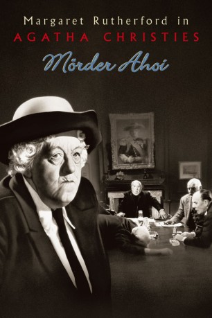

#10784 Miss Marple 3 - Mörder ahoi!
Alternativ: Murder Ahoy (Englischer Titel)
 
 IMDB-Wertung: 7.1 / 10
IMDB-Wertung: 7.1 / 10  Metascore: 0
Metascore: 0 
Miss Marple ist Mitglied einer Stiftung zur Rehabilitation krimineller Jugendlicher. Eine ihrer Kolleginnen ist ermordet worden, und so begibt sie sich auf die HMS Battledore - eine schwimmende Erziehungsanstalt für jugendliche Straftäter. Doch hinter der noblen Fassade ist einiges faul auf der HMS Battledore: In Wahrheit ist sie ein Ausbildungslager für zukünftige Schwerverbrecher. Und dass die findige Miss Marple das Geheimnis lüftet, will der skupellose Betreiber um jeden Preis verhindern...
Jahr: 1964
Dauer: 91 Minuten
FSK: 12
Land: England Studio: Warner Home VideoTonspuren:
Untertitel:
Auflösung: 1080p (1920x1080) Größe: 5048 MB
Genre: Drama, Komödie, Krimi, Mystery
Regisseur: George Pollock
Drehbuch: David Pursall, Jack Seddon, Agatha Christie, David Pursall, Jack Seddon
Soundtrack: Ron Goodwin
Darsteller:
- Margaret Rutherford als Miss Jane Marple
- Lionel Jeffries als Captain Sydney De Courcy Rhumstone
- Charles 'Bud' Tingwell als Chief Insp. Craddock
- Joan Benham als Matron Alice Fanbraid
 Miles Malleson als Bishop Faulkner
Miles Malleson als Bishop Faulkner- Henry Oscar als Lord Rudkin
- Gerald Cross als Brewer (aka Lt. Commander Dimchurch)
- Francis Matthews als Lt. Compton
- Roy Holder als Petty Officer Lamb (uncredited)
- Desmond Roberts als Sir Geoffrey Bucknose (uncredited)
- Ivor Salter als Police Sergeant (uncredited)
- William Mervyn als Comm. Breeze-Connington
- Stringer Davis als Mr. Jim Stringer
- Nicholas Parsons als Dr. Crump
- Derek Nimmo als Sub-Lt. Eric Humbert
- Norma Foster als Asst. Matron Shirley Boston
- Terence Edmond als Sgt. Bacon
- Lucy Griffiths als Millie
- Bernard Adams als Dusty Miller
- Tony Quinn als Kelly - Tramp
- Edna Petrie als Miss Pringle
- Billy Dean als Police Constable (uncredited)
- Henry B. Longhurst als Cecil Ffolly Hardwicke (uncredited)
- Arnold Schulkes als Officer (uncredited)
- Paddy Smith als Steward (uncredited)
Datei: X:\4-Tetralogie(M-Z)\Miss Marple\Miss Marple 3 - Mörder ahoi! (1964, FSK12, 1920x1080).mkv seit 22.02.2019
Festplatte: HD Collection-3(N-Z)-6(A-Z)
 Es gibt insgesamt 7 Filme in der Gruppe '4-Tetralogie(M-Z)\Miss Marple'
Es gibt insgesamt 7 Filme in der Gruppe '4-Tetralogie(M-Z)\Miss Marple'